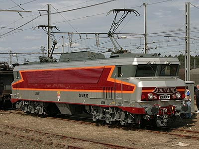
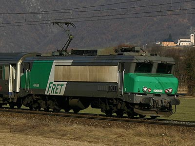

CC 6500
Au cours des années 60, la vapeur s'essouffle et la voiture se démocratise. Pour survivre, le chemin de fer doit
évoluer et s'ouvrir à l'Europe. Mais pour assurer les nouveaux trains Trans Europ Express, il faut du matériel rapide et luxueux.
Si les premières circulations internationales se contentent d'automoteurs courts, l'ouverture du label TEE aux relations intérieures prestigieuses
réclament des moyens d'un autre ordre de grandeur. Pour tirer les nouvelles et lourdes voitures TEE Inox et les futures Grand Confort, il
faut des locomotives puissantes. Les CC 6500 seront conçues pour ça.
Si elles n'innovent pas (elles reprennent le principe de la machine continu à rhéostat commandé par graduateur
des BB 9400 et partagent de nombreux organes mécaniques des CC
40100 et CC 72000), elles font dans la démesure. 5900 kW, 200 km/h. Une disposition d'essieux CC sera
obligatoire pour emporter l'imposant équipement électrique. L'unique moteur de chaque bogie possède un inducteur divisé
en deux pour permettre trois couplages. Les premières machines revêtent une livrée aluminium à grands bandeaux rouge
et orange signée Paul Arzens.
La seconde série de ces machines est destinée à une tâche moins glorieuse mais tout aussi importante. La
relève des machines Ex-PLM de la Maurienne nécessite des engins puissants pour tirer des tonnages importants sur des pentes de
plus de 30‰. Les CC 6500 Maurienne disposent du captage de courant par 3e rail et sont limitées à 100km/h au début
de leur carrière jusqu'en 1976 lorsque la caténaire est posée. Une troisième sous-série porte le nombre
d'engins à 74.
La mise au type 6500 des quatre CC 21000 complètera la série jusqu'à la CC 6578. Les CC 6500 mèneront
une carrière riche et de forts kilométrages à vitesse élevée pour les machines du Sud-Ouest. Trains de prestige
à 200 km/h ou marchandises à tonnage important, elles s'acquittent des tâches les plus exigeantes grâce à leur double
rapport d'engrenages.
L'arrivée des TGV Sud-Est puis Atlantique privent les CC 6500 de leurs services les plus prestigieux. Les nouvelles BB
26000 achèvent d'expulser les CC 6500 vers le trafic Fret en 1998. Malgré leur puissance appréciable sur les trains de
marchandises lourds, elles trainent une désagréable réputation de ne pas ménager les voies à cause de leur bogies C et
leur conception élitiste coûte cher à l'activité Fret qui doit appliquer un austère plan de rigueur. En 2004, le
coup de théatre intervient avec l'annonce d'une radiation massive et prématurée de la série d'ici la fin de l'année.
Un premier lot étant déjà arrêté depuis Juin.
En 2005, seules 16 machines roulaient encore. 8 étaient concédées à l'activité TER, remplaçant 5 autres machines confiées
en 2004. Ces machines assuraient notamment les trains de pointe de sports d'hiver en Maurienne assurés en rame V2N. Plusieurs 6500 ont néanmoins
pu être sauvegardées. La 6503 est désormais au musée ferroviaire d'Augsburg en Allemagne. La 6530, qui a retrouvé une
superbe livrée TEE inox, se trouve dans la collection complémentaire de la Cité du train. La 6572 devait être conservée en raison de son
baptème "Résistance Fer". Le musée a dû se résoudre à maquiller la CC 6565, en meilleur état. Les CC 6534, 6549,
6559, 6570 et 6575 (ex-21001) sont préservées par des associations. La CC 6558 Maurienne, en service jusqu'en 2007, fut également conservée par l'APMFS.
Les CC 6570 et 6558 sont toujours en état de rouler et assurent régulièrement des trains spéciaux.
La 6559 est à nouveau agréée depuis 2015 et la 6534 est fonctionnelle mais ne peut emprunter les voies principales faute d'agrément.
Les livrées
Les années 60 consacrent l'inox. Après les rames de banlieue, les voitures Mistral 56 (DEV Inox) et Mistral 69 (TEE Inox) y associent
une image de luxe. Aussi la première série des CC 6501 à 6538 revêt l'inox réhaussé de rouge et d'orange. La
même teinte Inox sera en outre appliquée à la livrée C160 des voitures DEV AO, UIC et USI ainsi que les rames RGP et RTG. La
mauvaise tenue de cette peinture oblige cependant à la remplacer par un gris clair mat.
Les machine de la seconde sous-série (6539 - 6559) se voient spécialisées au service de la Maurienne et reçoivent une livrée plus
classique vert foncé dite "Maurienne". Les persiennes sont désormais en polyester et décalées. Ces machines
étant banalisées à partir de 1976 au reste de la série, elles recevront progressivement la livrée TEE. La
6558 à reçu à titre historique la livrée Maurienne.
La 3e sous-série (6560 - 6574) reçoit à nouveau la livrée TEE mais directement à base de gris mat. Les persiennes
sont en inox.
Les 6512 et 6568 furent repeintes en livrée béton en 1987. Comme pour les BB 15000, la forme
des persiennes imposait cependant de modifier le tracé du bandeau orange par rapport aux BB 7200 et
22200. Ce qui rendait l'esthétique de la machine particulièrement triste. La 6512 a perdu cette livrée au profit de la livrée Fret
Puisque les 6500 étaient toutes affectées au Fret à partir de 1998, les dernières machines passées en révision
ont revêtu la livrée Fret.
Quelques données techniques
Constructeur : Alsthom MTE
Tension d'alimentation : 1,5 kV continu
Chaîne de traction : Banc rhéostatique commandé par
graduateur.
Motorisation : 1 moteur TTB 665 par bogie
Puissance totale : 5900 kW
Longueur : 20,190 m
Masse : 115t (1e et 2e sous-série), 118t (3e sous-série)
Pantographes : 2 x AM 18 B
Machines remarquables de la série
La CC 6558 a retrouvé son ancienne livrée Maurienne lors de son dernier passage en révision. Elle est préservée par l'APMFS à Ambérieu.
Les autres 6500 préservées : 6503 au musée d'Augsburg, la 6530 dans la collection de Mohon, les CC 6534 et 6559 par l'association Simil500 à Lyon, 6575 à Nîmes, 6549 et 6558 par l'APMFS, 6565 à la Cité du train (renumérotée 6572 avec le blason Résistance Fer), 6570 préservée par l'APCC6570 en Avignon.
La CC 6568 est de l'avis des amateurs le vilain petit canard de la série. Revêtant la livrée béton, elle fut radiée ainsi.
Les CC 6575 et 6576 sont les ex-21001 et 21002, elles sont reconnaissables à leurs persiennes horizontales.
Les CC 6577 et 6578 sont les ex-21003 et 21004.
machines radiées accidentellement: 6519, 41. De plus, 21 machines étaient déjà été rayées des inventaires en 2004.
Pour plus d'info :
la fiche CC 6500 sur Wikipedia
Fiche technique des CC 6500 de Florent
Brisou
l'inventaire des CC 6500 sur Trains du Sud-Ouest

La CC 6530 rénovée en livrée d'origine à l'occasion du 50e anniversaire du record de vitesse des Landes. Morcenx (28/03/2005)
La CC 6515 à St Jean de Maurienne (07/02/2004)
La CC 6558 a retrouvé ses couleurs de Maurienne.
Chambéry (07/02/2004)
La CC 6558 avec un train spécial de l'APMFS rebrousse à Culoz (18/09/2010)
La CC 6539 hisse une V2N à Modane (07/02/2004)
La CC 6544 à Villeneuve St Georges le (07/09/2003)
La CC 6506 Fret radiée à Roanne (décembre 2004)

Ex-Maurienne en Maurienne. La CC 6559 Fret à Epierre (22 Janvier 2006)
La CC 6570, 3ème sous-série, à St Chély d'Apcher (16/05/2009)